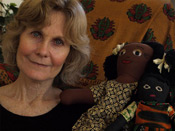
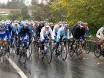

My Vision:
Milan Buttke shoots weddings, baptisms and other events, commercial head shots, fashion, nature, and portraits. With her primary camera being a Nikon D7100, she shoots both film and digital in most cases in order to get an "eerie warmth" to convey harmony between roughness and comfort. An Olympus E-510 is her secondary camera, while film pictures (optional) are taken with a Pentax K1000.
Of course, with the overall look for families, portraits, and "commercial" oriented works much warmer, her film and "photoshop art" pieces have a more rustic feel to them. Milan strives to capture that "precise moment" of life and energy in a photo, no matter what the intended finished product may be.
Published Works:
- Kathleen Kraemer for "Mama Na Dada" Organization (February 2008) in Santa Rosa Oak Leaf Newspaper, Santa Rosa CA
- Bicyclists in the rain for "Tour of California" (February 2008) in Santa Rosa Oak Leaf Newspaper, Santa Rosa, CA
My Bio:
With over 20 years experience modeling and acting in front of the camera, Milan has a unique, professional, and clear idea of how the industry works and what it calls for. From working in national and regional commercials, independent and feature films, doing voice over, and writing and directing her own films, she's gained invaluable experience, knowledge, and professionalism that few people possess.
In 2002 she began studying film and editing on the Casablanca editing machine at the Santa Rosa Junior College, and her focus turned to photography and Photoshop in 2007. She has assisted numerous photographers in Sonoma and Marin counties, now eager to make a name for herself. "I hope to prove photography as a true art form if it hasn't been accomplished already. I, myself, think it's a total art. To capture those 'precise moments' and uniqueness of each event and family takes a lot of focus and dedication, and means I did my job well. Not only on the day of shooting, but the pre and post production work plays a big part too. Without the 'wow' factor, I'm just another face in the crowd, so this pushes me to do my best and really deliver."
As a mother of 18 month old twins and a renewed sense of determination, this is just the beginning of great things to come from Milan Buttke Photography.
-Lisa Dunn
We had some professional photographs done by Milan, and we are so very pleased with her work. She is a gifted photographer that we would recommend for any occasion.
-Brenda and Frank Ruys
As an experienced model, Milan knows what it's like on both sides of the camera. She has an eye for the art but also put me at ease with her consideration of my comfort. The result was fun, relaxed photos that weren't contrived or posed looking. A true pleasure to work with.
-Sarah Beth Riess
Milan photographed our wedding and was amazing! She captured every sweet little moment we could possibly imagine. She made sure we got all our "traditional" shots and also managed to surprise us with amazing candid shots! Thank you for helping us to always remember our special day.